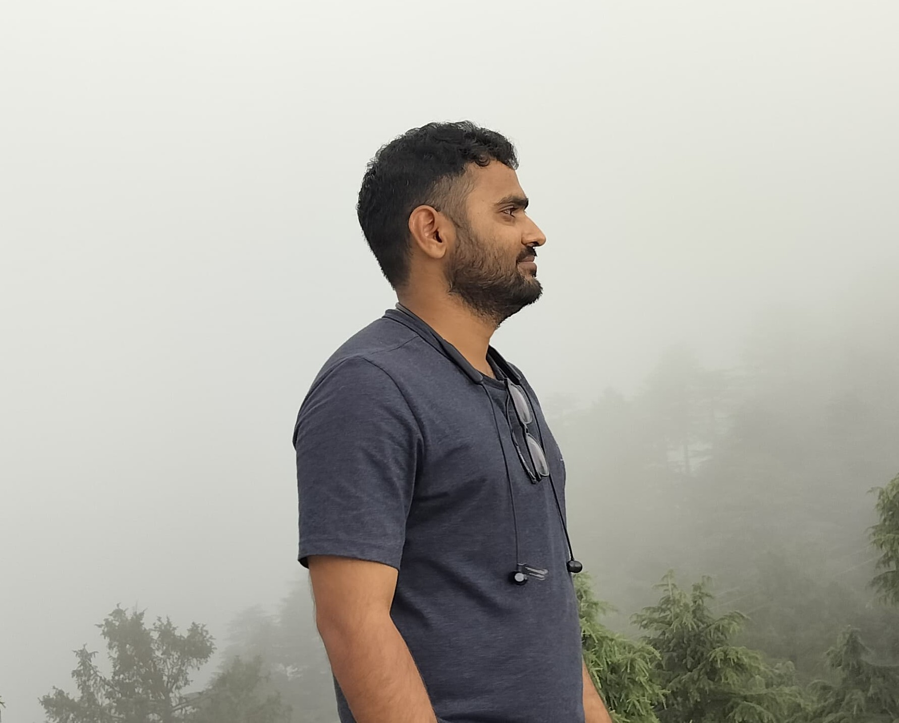

Veeresh R. Maned, Satyabrat Rath, Jothi Ramalingam, Lakshmidevi Kuppusamy. Enhancing IoT Security through Cloud-Assisted Post-Quantum Authentication: A Case Study with UOV Signatures. View paper ↗

Institute Post Doctoral Fellow at IIT Kharagpur
Satyabrat Rath
Researcher in cryptography with a focus on lattice-based post-quantum primitives, secure outsourcing, and verifiable computation.
I am currently working at the Indian Institute of Technology Kharagpur and building advanced functional encryption primitivies for privacy-preserving computation.
Lattice-based cryptography
Post-quantum cryptography
Secure outsourcing
Verifiable computation
Focus
Lattice-based cryptography
Approach
Secure outsourcing for verifiable computation
About
A concise overview of my research journey and current focus.
I am a passionate pure mathematician in the world of cryptography. During my Ph.D., I worked on designing secure outsourcing protocols for verifiable computations under the guidance of Prof. R Jothi Ramalingam. After my Ph.D., I worked with Dr. R Kabaleeshwaran on secure post-quantum digital signature schemes from lattices. I am currently an Institute Postdoctoral Fellow, working with Prof. Monosij Maitra at IIT Kharagpur.
Research Interests
Core areas that guide my ongoing and recent work.
Primary Themes
- Cryptography
- Post-Quantum Cryptography
- Lattice-Based Protocols
Other Directions
- Secure Outsourcing
- Secure and Verifiable Computation
- Quantum Key Distribution
Publications
Selected peer-reviewed publications and technical contributions.
Veeresh R. Maned, Satyabrat Rath, Jothi Ramalingam, Lakshmidevi Kuppusamy. Enhancing Quantum Key Distribution via McEliece-Based Hybrid PQC-QKD Architecture. View paper ↗
Satyabrat Rath, Jothi Ramalingam, Sohham Seal. A Note on "Secure and Efficient Outsourcing of PCA-Based Face Recognition". View paper ↗
Jothi Ramalingam, Satyabrat Rath, Lakshmi Kuppusamy, Cheng Chi-Lee. Accelerating QKD Post-Processing by Secure Offloading of Information Reconciliation. View paper ↗
Satyabrat Rath, Jothi Ramalingam. Comment on "Outsourcing Eigen-Decomposition and Singular Value Decomposition of Large Matrix to a Public Cloud". View paper ↗
Satyabrat Rath, Jothi Ramalingam, Cheng-Chi Lee. On Efficient Parallel Secure Outsourcing of Modular Exponentiation to Cloud for IoT Applications. View paper ↗
Satyabrat Rath, Jothi Rangasamy. Privacy-Preserving Outsourcing Algorithm for Solving Large Systems of Linear Equations. View paper ↗